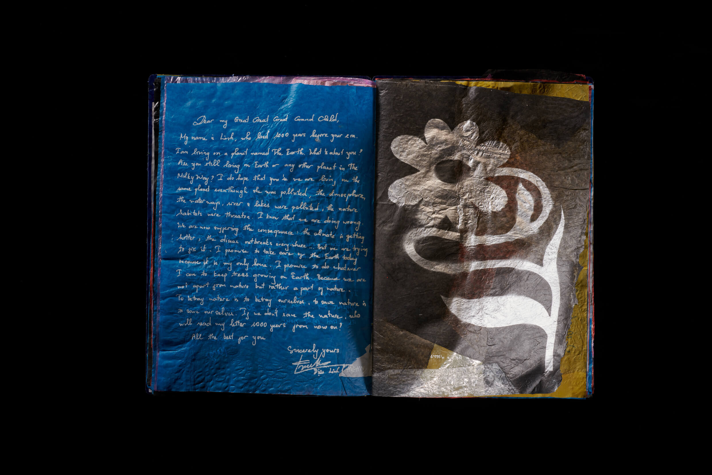
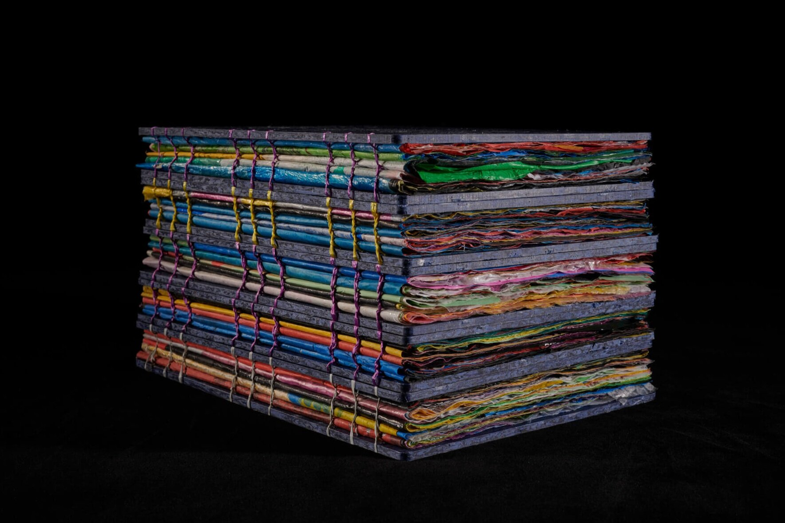
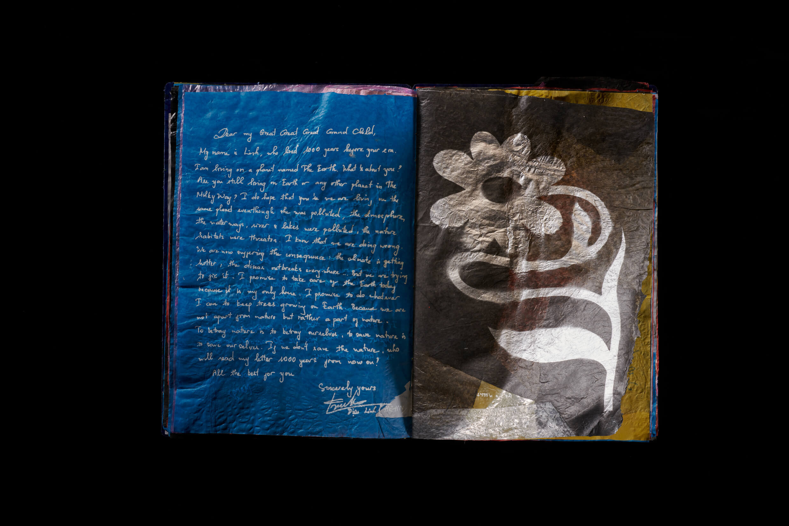
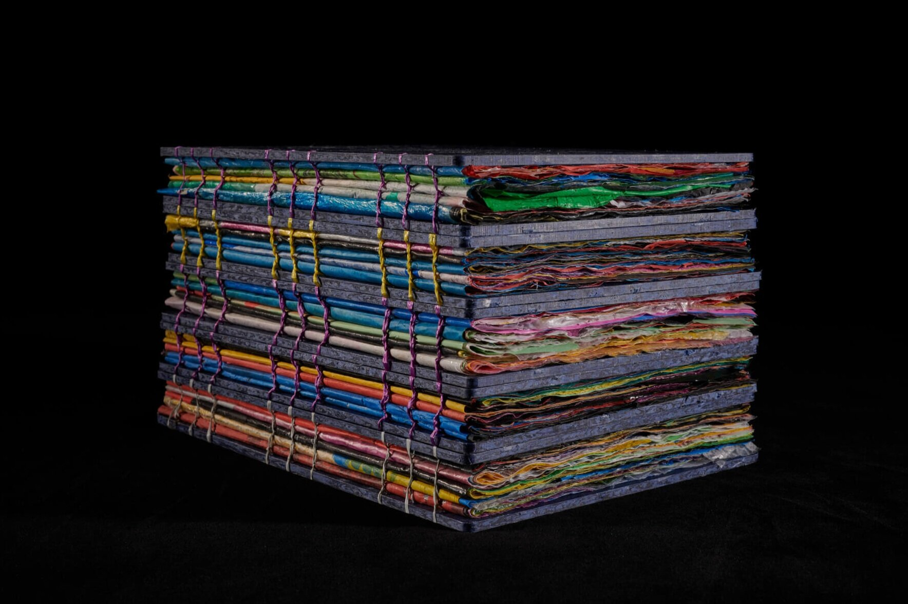

"Letters to the future is an initiative by a group of like-minded people, who want to bring about a positive change in society, when it comes to our environmental impact on the planet. This journey began as an art project meant to bring out a duality in what really lies in our hearts for our future generations - compassion and hope - yet our current wastefulness with plastic goes directly against the betterment we wish for. A piece of plastic lasts more than a thousand years. The apt way to bring out the duality of what lies in our heart and our actions was to ask people to write letters to their great great great grandchildren, take those wonderful prose and print it on the very plastic we freely discard that litters our streets and streams. Our intention is to make the witnessing of this project a visceral reaction, which is both beautiful and ugly at the same time."